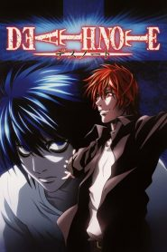

Animes destacados

Death Note
Death Note es una serie de manga escrita por Tsugumi Ōba e ilustrada por Takeshi Obata, y cuya adaptación a anime fue dirigida por Tetsurō Araki. La historia se centra en Light Yagami, un estudiante de escuela secundaria.